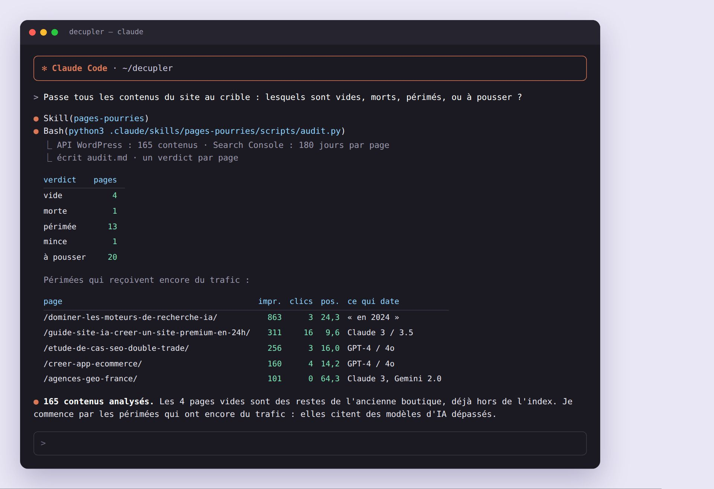
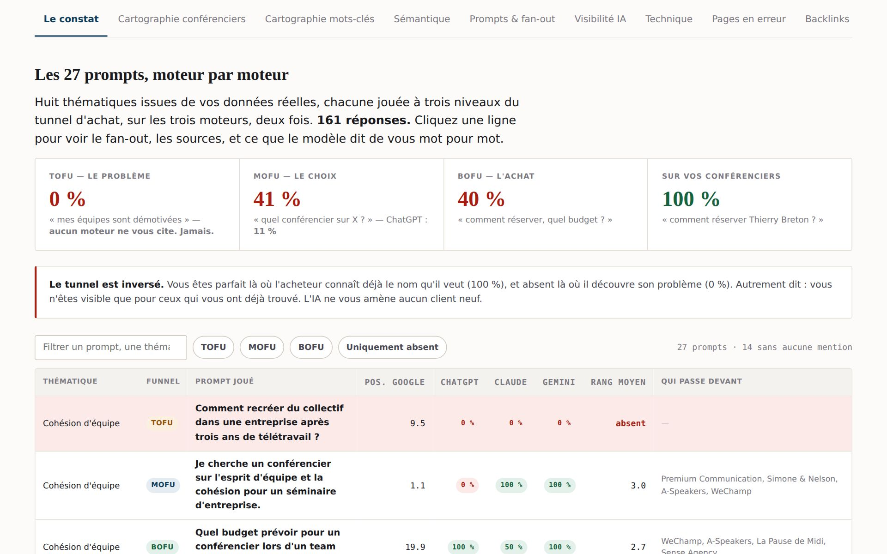
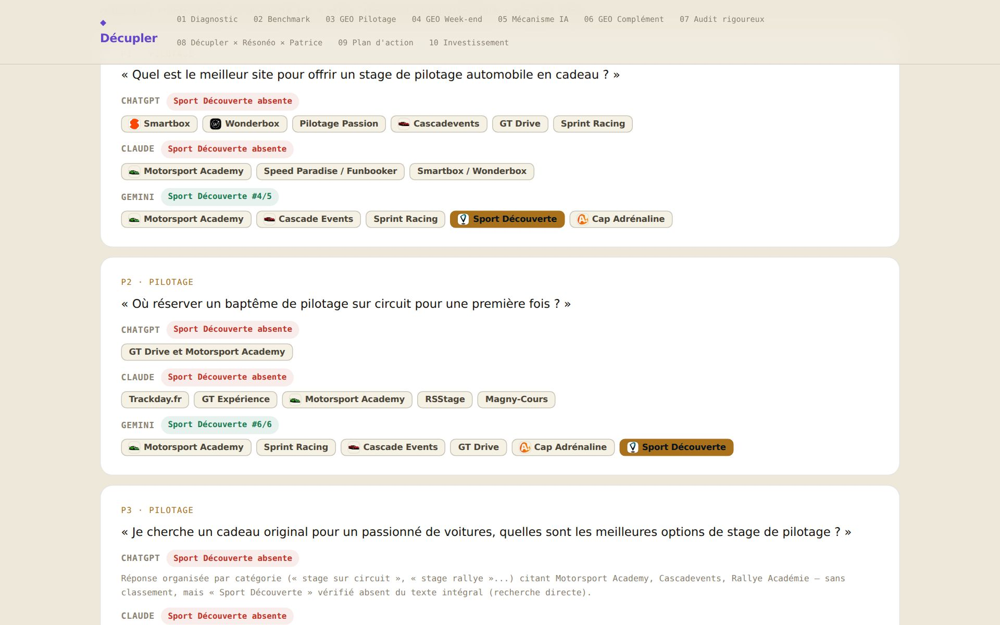
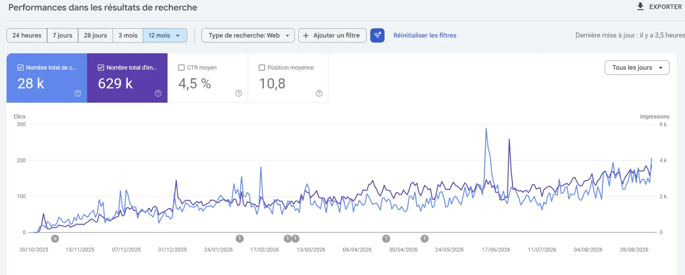
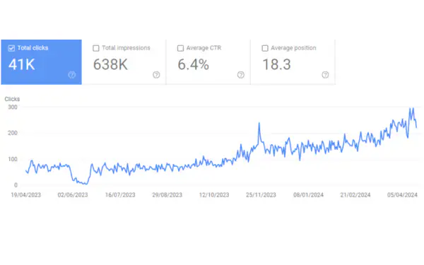

04 · 5 démos en direct
Ce que vous allez me voir faire, maintenant
Un brief SEO/GEO complet, sur votre mot-clé
Le brief part de la SERP réelle, pas d'une intuition : intention, pages qui rankent, questions posées, entités à couvrir. La réponse directe et la FAQ sont déjà rédigées pour être reprises par les IA.
> /seo brief "votre mot-clé" ● SERP relevée · top 10 analysé ● intention · entités · questions (PAA + fan-out IA) ● structure H2/H3 + réponse directe + FAQ rédigées ● maillage interne proposé depuis le sitemap → brief.md prêt pour la rédaction
Une page qui rank mal : diagnostic prouvé, puis page corrigée
Claude Code passe tout le site au crible avec WordPress + Search Console, puis s'attaque page par page : score critère par critère, réécriture, données structurées. Cas réel : une catégorie e-commerce reprise de A à Z (SERP relevée desktop + mobile, top 3 benchmarké, cannibalisation cartographiée).
/seo onpage <url> <mot-clé>: note /100 puis réécrit- skill
refonte-page-seo: analyse, page corrigée, JSON-LD

Intégrer dans WordPress sans 2 h de copier-coller
Des plugins WordPress écrits avec Claude Code, en production sur decupler.com :
- Yoast en écriture via l'API : title, meta, mot-clé focus remplis par Claude
- Entité : le graphe schema.org complet (organisation, auteur unique)
- Budget de crawl : robots.txt propre, 404 sur la pagination morte. 1,5 Go de téléchargements inutiles évités à Googlebot
- Pop-up : l'invitation à ce workshop, qui s'efface seule à la date de fin
Une page publiée = une page soumise, sans y penser
Claude Code + l'extension Claude in Chrome : il ouvre la Search Console et clique « Demander l'indexation » comme vous le feriez, pas via l'API. Avec une mémoire long terme (Obsidian), plus besoin de lui donner les URL.
Mieux : un skill + un cron. Chaque soir, les pages publiées du jour sont soumises toutes seules. Google limite à une dizaine de demandes par jour et par propriété : on priorise les pages neuves.
Savoir si ChatGPT, Claude et Gemini vous citent
Des prompts neutres, joués sur chaque moteur, plusieurs fois, à chaque étape du tunnel d'achat. On ne devine pas : on mesure qui est cité, à quel rang, et qui passe devant.
- Search Console + GA4 branchés via MCP : les prompts sont déjà dans vos requêtes
- Suivi mensuel (prompts avant / J+30 / J+60) : la preuve, ce sont les citations gagnées


Coder ses propres outils, sans être développeur
La « moulinette » : une liste de domaines en entrée, un pré-audit GEO complet et publié en sortie pour chacun (SEO réel, 10 prompts neutres × 3 IA, concurrents cités, plan d'action). 50 entreprises d'un coup, 1 500 réponses d'IA analysées, un radar pour prioriser les relances.
- 87 pré-audits en ligne, chacun à sa propre URL
- Un simulateur public : app.decupler.com/geo-ready


06 · Les résultats
Ce que ça donne dans la Search Console
Des sites B2B que j'accompagne. Noms masqués, chiffres bruts.

Site neuf · lancé en octobre 2025

Gros site B2B · mai → août 2026

Avant Claude Code · 2023 → 2024
Je savais déjà faire du SEO. Ce qui a changé avec Claude Code, ce n'est pas le savoir-faire : c'est le nombre de sites que je peux piloter en même temps, et la vitesse.